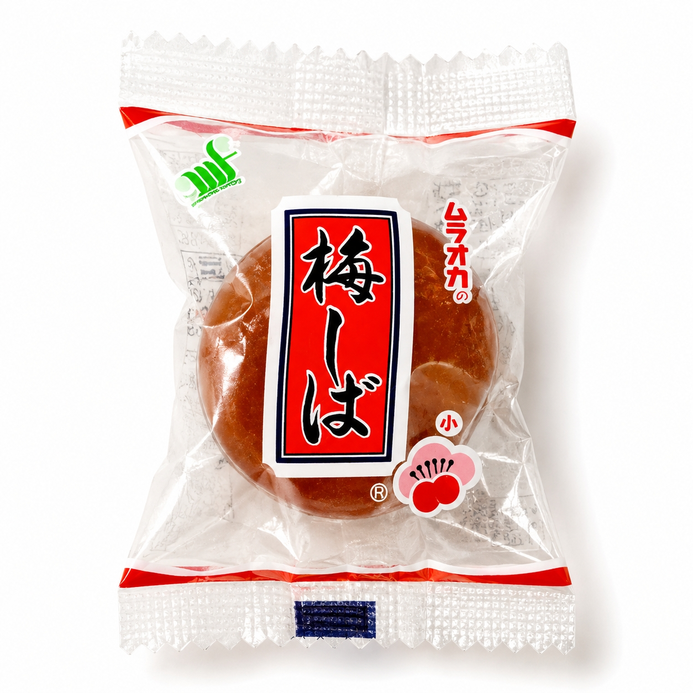
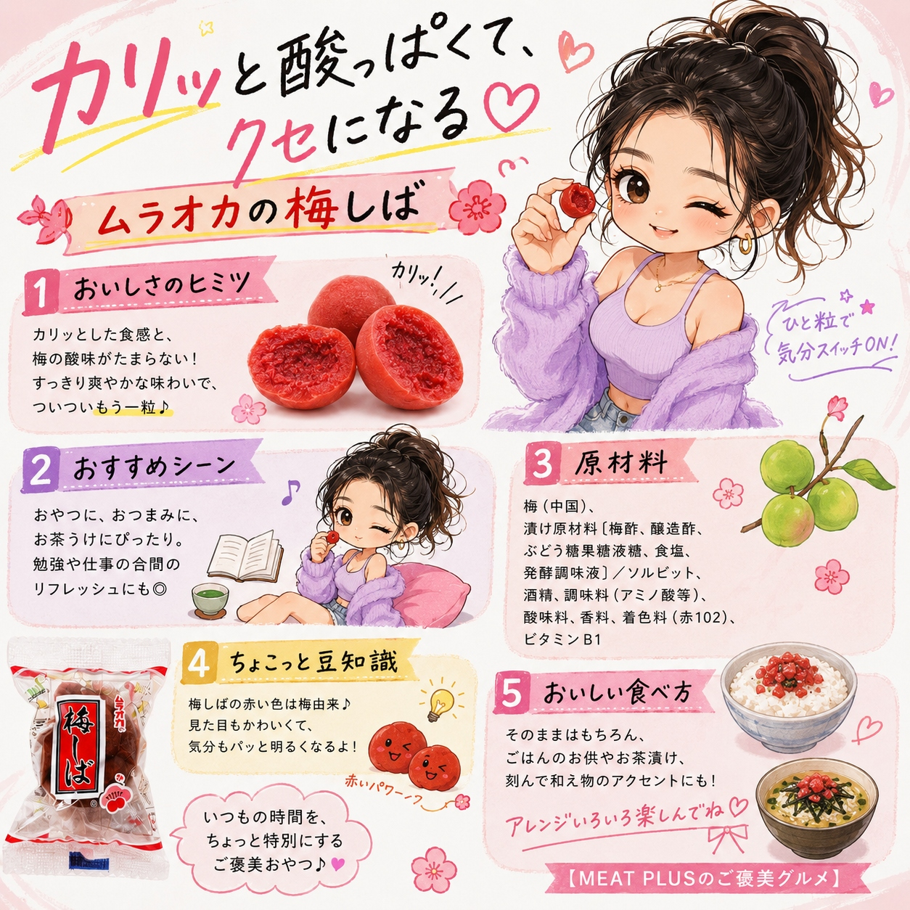

SCENE 01
K007

k スイーツ・菓子
ムラオカの梅しば
【カリッと食感、じゅわっと梅の味。懐かしさがクセになる一粒。】
- 内容量10個/ｐ
- 保存常温
- 産地中国
商品の特徴を読む
仕事や家事の合間に、ちょっと一息つきたい時。そんな時に食べたくなる、カリッとした歯ごたえと、じゅわっと広がる梅の風味がたまらない「ムラオカの梅しば」。長年愛され続けるこの懐かしい味わいは、まるで昔からの友達のような安心感を与えてくれます。 一粒ずつ丁寧に個包装されているので、バッグやポケットにそっと忍ばせて、いつでもどこでも手軽に楽しめるのが嬉しいポイント。手を汚さずに食べられるので、ドライブのお供やお子様のおやつにも最適です。 お茶請けとしてはもちろん、キリッと冷えたお酒のおつまみにすれば、一日の疲れも癒やされます。また、スポーツや屋外での活動時の塩分補給にもぴったり。様々なシーンで活躍する万能選手です。 今日のあなたのお供に、この懐かしくて新しい一粒を加えてみませんか。きっと、日常のちょっとした時間が、もっと楽しく、味わい深くなるはずです。
公式サイトへ移動します。価格・在庫・配送条件は移動先で最終確認してください。

SCENE 02
【カリッと食感、じゅわっと梅の味。懐かしさがクセになる一粒。】
SCENE 03
【カリッと食感、じゅわっと梅の味。懐かしさがクセになる一粒。】
PRODUCT INFORMATION
購入前に確認したい商品情報
- 商品名
- ムラオカの梅しば
- 商品規格
- 10個/ｐ
- 保存方法
- 常温
- 原産国
- 中国
- 製造地
- 日本
- 賞味期限
- 発送日より3ヶ月
原材料
梅(中国)、漬け原材料〔梅酢、醸造酢、ぶどう糖果糖液糖、食塩、発酵調味液〕/ソルピット、酒精、調味料(アミノ酸等)、酸味料、香料、着色料(赤102)、ビタミンB1
FAQ
購入前のよくあるご質問
梅の産地と製造地はどこですか？
原材料の梅は中国産のものを使用しております。製造は日本の工場で、厳しい品質管理のもと行っておりますので、安心してお召し上がりください。
保存方法と賞味期限を教えてください。
直射日光、高温多湿を避けて常温で保存してください。賞味期限は発送日より3ヶ月以上のものをお届けします。個包装なので、開封後もすぐにお召し上がりいただく必要はございませんが、風味を損なわないうちにお早めにお楽しみください。
MEAT PLUS OFFICIAL SHOP
【カリッと食感、じゅわっと梅の味。懐かしさがクセになる一粒。】
仕入れ・加工・梱包・発送まで自社で行うMEAT PLUSの公式オンラインショップでご注文いただけます。
公式オンラインショップで購入する